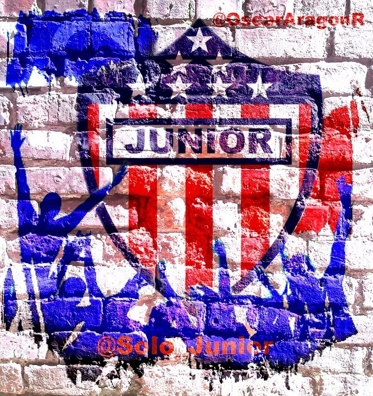
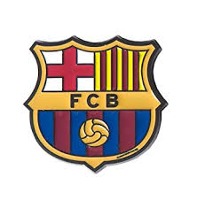

soy aficionado del club atletico JUNIOR FC Y BARCELONA FC
soy estudiante del sena En programacion de software
aqui les conparto un poco de la historia de club atletico junior

El Club Deportivo Popular Junior F.C. S.A., más conocido como Junior de Barranquilla o simplemente el Junior, así como por su antiguo nombre de Atlético Junior, es un club de fútbol de la ciudad de Barranquilla, Colombia. Fue fundado el 7 de agosto de 1924, convirtiéndose en el tercer club más antiguo del país.12 A nivel deportivo se ha consagrado campeón de la Primera división del fútbol profesional colombiano en las ediciones de: 1977,13 1980,14 1993,15 1995,16 2004-II,17 2010-I,18 2011-II,19 2018-II.20 También cuenta en su palmarés con dos títulos de la Copa Colombia (2015, 2017) y una Superliga de Colombia (2019). Sumando un total de once títulos oficiales en el profesionalismo, que lo convierte en el sexto club más ganador del fútbol colombiano.21
A nivel internacional, es el sexto club del Fútbol Profesional Colombiano con más participaciones internacionales oficiales, en torneos organizados por Conmebol. Su mejor participación internacional fue en la Copa Sudamericana 2018 quedándose con el subcampeonato. Es el equipo más importante de la Región Caribe del país.22 Además, ha sido el único en representar en calidad de selección nacional a Colombia en un Campeonato Sudamericano (actual Copa América) obteniendo la Copa Mariscal Sucre destinada a la mejor selección entre los equipos Bolivarianos.23
El club oficia de local en el estadio Metropolitano Roberto Meléndez, que lleva el nombre del futbolista barranquillero, delantero histórico de Colombia en la época del deporte no profesional. Fue inaugurado el 11 de mayo de 1986 y se encuentra ubicado en la localidad metropolitana en el sur de la ciudad, en el límite entre Barranquilla y el municipio de Soledad. Su capacidad total es de aproximadamente 46.692 espectadores.
Su rival clásico es el Unión Magdalena, con el que disputa el clásico costeño
les cuento un poco de la historia del barcelona
El Fútbol Club Barcelona (en catalán, Futbol Club Barcelona) es una entidad polideportiva de Barcelona, España. Fue fundado como club de fútbol el 29 de noviembre de 1899.8 Es uno de los cuatro clubes profesionales de España junto a Real Madrid, Athletic Club y Osasuna que no es sociedad anónima, de manera que la propiedad del club recae en sus socios.

El F. C. Barcelona es conocido popularmente como Barça (abreviación de la pronunciación de Barcelona en catalán central) y sus hinchas como culés9(pronunciación del catalán «culers»); también, y en referencia a sus colores, se utiliza el término azulgranas, que procede del catalán «blaugranes», tal como aparece en su himno, el «Cant del Barça», el cual en su segunda línea menciona «Som la gent blaugrana» (en castellano, «Somos la gente azulgrana»). A nivel institucional, el Fútbol Club Barcelona denomina a sus aficionados como «barcelonistas» y tiene a su servicio, para atender a socios, simpatizantes y público en general, la OAB, sigla que significa Oficina de Atención al Barcelonista, donde quien lo solicita es atendido en los idiomas oficiales del club, que son el catalán, el castellano y el inglés.10
Una de las principales características del F. C. Barcelona es su carácter polideportivo. Se distingue de las demás instituciones deportivas por el hecho de que posee un extenso palmarés a nivel europeo, por el alto nivel de formación de sus jugadores, el potencial económico que maneja, por la calidad de los jugadores y también porque «posee una remarcable cultura del juego y del triunfo».11 Asimismo, los medallistas olímpicos que han representado a la entidad blaugrana han conquistado once oros, veintitrés de platas y veintiocho bronces en las distintas disciplinas deportivas.12
Otro de sus hechos distintivos es su masa social de socios y aficionados. El club ha logrado integrar de forma estratégica cuestiones políticas, religiosas, culturales y sociales, que van enmarcadas dentro del ámbito deportivo, esto permite que los socios y los aficionados respondan a todos los eventos sociales del club, también que tengan mayor participación en actividades administrativas y se fortalezcan los vínculos entre las peñas.13 En 2011 alcanzó los 180 000 socios,nota 11415 siendo hasta ese momento el segundo equipo con más asociados del mundo, seguido por el Manchester United F. C..16 Existen, además, más de 1200 peñas barcelonistas repartidas por todo el mundo.1718
Sus dos rivales históricos son el R. C. D. Español, contra el que disputa el derbi catalán, y el Real Madrid C. F., con quien se enfrenta en «El Clásico», siendo este uno de los encuentros de mayor rivalidad e interés del fútbol mundial.19
Es uno de los equipos más populares de su país y del mundo. Según una encuesta publicada por Personality Media, el F.C. Barcelona posee un 32,1% de simpatía entre la población que sigue al fútbol, seguido del Real Madrid con un 32,07%.2021222324
Es el club español más laureado, a nivel nacional domina el palmarés con setenta y cuatro campeonatos, entre veintiséis Ligas de España, treinta Copas del Rey, dos Copas de la Liga, trece Supercopas de España y tres Copas Eva Duarte.2526 Y a nivel internacional ostenta veintidós trofeos, situado en el segundo puesto europeo con tres Copas Mundiales de Clubes, cinco Ligas de Campeones, cuatro Recopas de la UEFA, cinco Supercopas de la UEFA, dos Copas Latinas y tres Copas de Ferias.26
Según las estadísticas que realiza el IFFHS, el F. C. Barcelona es el mejor equipo de fútbol europeo y mundial de la primera década del Siglo XXI.nota 227 Con fecha a 31 de diciembre del 2009, el F. C. Barcelona lidera con 807 puntos la clasificación histórica del ranking mundial de clubes que realizaba hasta finales de 2009 la IFFHS, con una diferencia de 81 puntos sobre el segundo en el ranking (Manchester United).28 Es además el equipo de fútbol que más veces ha figurado en los podios del FIFA World Player (15) y del Balón de Oro (20).29